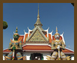
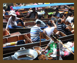

- 
王宮
ワットポー
- 
水上マーケット
ロングスティをお考えの方、是非とも事前の視察をおすすめします。
情報はネットで収集可能ですが、実際に体験することは大切だと思います。
ご相談によって視察の日程を作成してご提示します。

全行程において弊社スタッフが同行してアテンドいたします。
バンコク2日間、チェンマイ2日間でロングスティ先の物件の視察や留学先の見学、生活圏などの下見などをいたします。
気に入った物件に仮宿泊なども可能ですので、ご相談ください。
6日間:¥60,000
1名様料金です。2名様は追加料金20,000円で承ります ホテル(3つ星)
ホテル(3つ星) 国内交通費*
国内交通費* 現地スタッフ同行
現地スタッフ同行空港にてスタッフと合流しホテルにて打ち合わせ
「天使の都」といわれる東南アジア最大の都市バンコクを視察します。
日本人エリア、振興地区、物件などをご案内します。語学学校視察もできます。
バンコク生活体験(物件内覧、買い物、交通など)
「北方のバラ」といわれるタイ第2の都市を視察します。
日本人エリア、住宅街を視察して、物件などをご案内します。
チェンマイからバンコクへ空路で向かい、乗り継ぎで日本に帰国します。
全行程ともDD-THAILANDのスタッフが同行いたします。
美しいタイの街並みや寺院を観光してみたいですか？
スケジュールの合間に、ご希望により１日観光などを追加することができます。(別途料金)
王宮
ワットポー
水上マーケット
ドイステープ
サムカムペーン
など
王様の別荘地として知られる高級ビーチリゾートです。
※日本人は少ないですが、のんびりと暮らすことができます。
バンコクから3時間程 1泊2日

東洋のリビエラといわれる、タイ最大のビーチリゾートです。
東洋最大の歓楽街もあり、エキサイティングな生活が待っています。
バンコクから2時間程 1泊2日